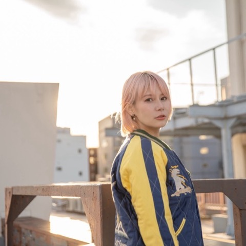

AIの相棒を育成しよう
AIに使われる人にならない。
毎日の「めんどう」を任せられる一生モノの相棒を、
1ヶ月半かけて自分の手で育てます。
こんなお悩み、ありませんか？
このラボは、みなさんの声から生まれました。
勉強会アンケート・約100名のご回答より
やる気はある。時間はない。何からやればいいかわからない。
それなら必要なのは、たくさんの情報ではなく
「正しい順番」と「あなた専用の地図」です。
卒業するときの、あなたの状態。
任せてよいこと・いけないことを自分で仕分けられるようになります。主導権はいつも自分に。
献立・予定・説明文・リサーチ。小さな「めんどう」をAIに渡せるようになります。
最終ミッションはアプリ2つ。自分のために1つ、大切な誰かのために1つ。
1ヶ月半の階段（7つのSTEP）
動画1本10分前後＋15分でできる宿題。カリキュラムサイトは今後も育ち続けます
3つのAI（ChatGPT・Gemini・Claude）の無料アカウントを整えて、音声入力を設定。最後に「AIカルテ」を提出します。
合言葉は「あなたが社長、AIは秘書」。3つの質問で、わが家の仕分け表を作ります。
役割・目的・材料・形・直す前提。一発で完璧を求めず、往復して育てる頼み方を練習します。
画像とLPに強いChatGPT、Google連携のGemini、じっくり型のClaude。課金の目安もここで整理します。
献立と買い物リスト・予定の整理・学校への文書・説明文の下書き・リサーチのたたき台・画像・在庫や売上の整理など。コピペで使えるテンプレ50本つき。
よく使う頼み方を「マイテンプレ帳」に。GeminiとGoogleの連携、Cowork（作業ごと任せる使い方）の入門まで。
自分のためのアプリを1つ（例：献立表・在庫メモ・スケジュール帳）。そして、大切な誰かのためにもう1つ。オープンチャットでお披露目します。
一人ひとり違うから、
あなた専用カルテで進めます。
全員に同じ宿題を配る講座ではありません
いまの悩み・やりたいこと・使える時間を10問で教えてください（スマホで3分）。
約100名の診断データで鍛えた仕組みが、あなたのつまずきと近道を読み解きます。
どこでつまずいているかを森川くみこが直接判断して、「あなたはこの順番で」という専用の地図をお渡しします。
質問・作ったもののお披露目の場。期限なく、卒業後もずっとご参加いただけます。
一般募集は、しません。
くみこはふだん、数万人規模のスクール4社をマーケティング顧問として月額100万円でご支援しています。その現場で毎日使っているAI活用を、一般論ではなく「くみこならこう頼む」という私の脳みそごとお渡しするのがこのラボです。だからこそ一般には公開せず、生徒さん限定・最小限の金額でのご提供にしました。
含まれるもの・進め方
| 定員 | 100名限定（Meroneの生徒さんのみ） |
| 勉強会 全3回 | アーカイブつき。日程は開講後にご案内します |
| カリキュラムサイト | STEP0〜6の動画とテンプレ。今後も追加され、育ち続けます |
| あなた専用カルテ | 入会時＋卒業時の2回、専用ロードマップをお届け |
| 頼み方テンプレ50本 | 暮らし編・仕事編。コピペしてそのまま使えます |
| オープンチャット | 質問・お披露目の場。期限なくご参加いただけます |
| 最終ミッション伴走 | 自分用1つ＋身近な人用1つ、アプリ2つの完成までサポート |
アンケートを全部読んで、はっきりわかったことがあります。みなさんの悩みは、一人ひとり本当に違います。だから最初の1週間は講義ではなく、AIカルテで「あなたの課題」と「AIに任せられること」を一緒に炙り出すことに使います。勉強会の日程は、開講後にあらためてお伝えします。
教えるのは、森川くみこです。

情報経営イノベーション専門職大学 客員准教授。数万人規模のスクール4社をマーケティング顧問として支援し、企画・分析・ツール開発の現場で毎日AIとともに働いています。この4ヶ月でAIに頼んできた「実際の依頼文」と、その裏側の考え方を、このラボでそのままお渡しします。
1ヶ月半の伴走つき。オープンチャットは期限なし、
週1時間からの設計です。
向いている方・向いていない方
主導権はいつも、あなたに持っていてほしいからです。
よくあるご質問
迷っている時間が、
いちばんもったいない。
お申込みのご案内は、勉強会にご参加のみなさまへお届けします。